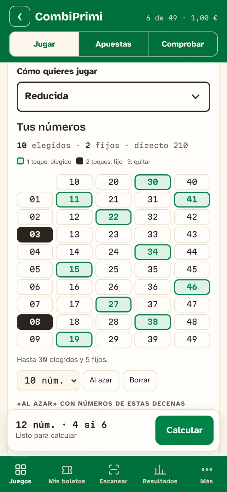
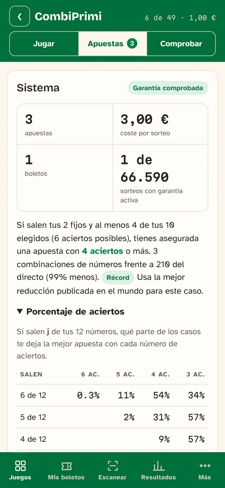
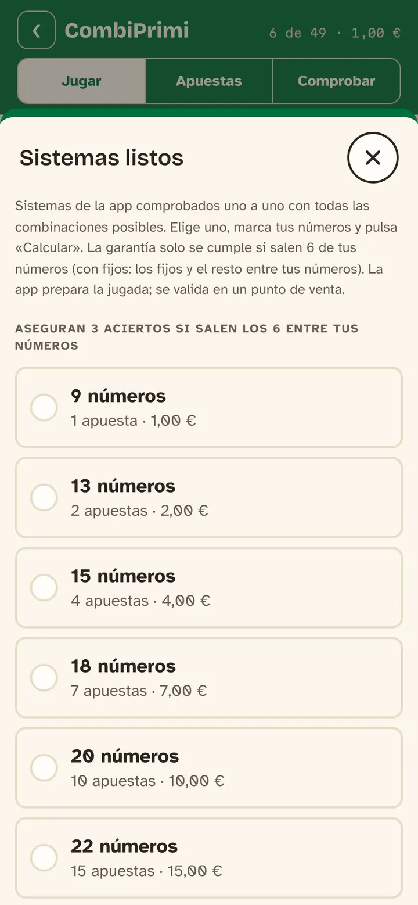
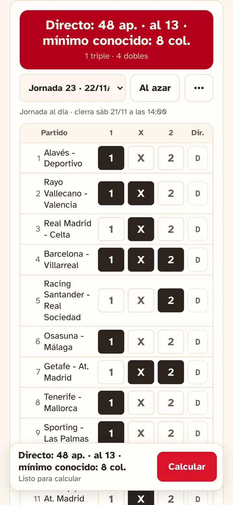
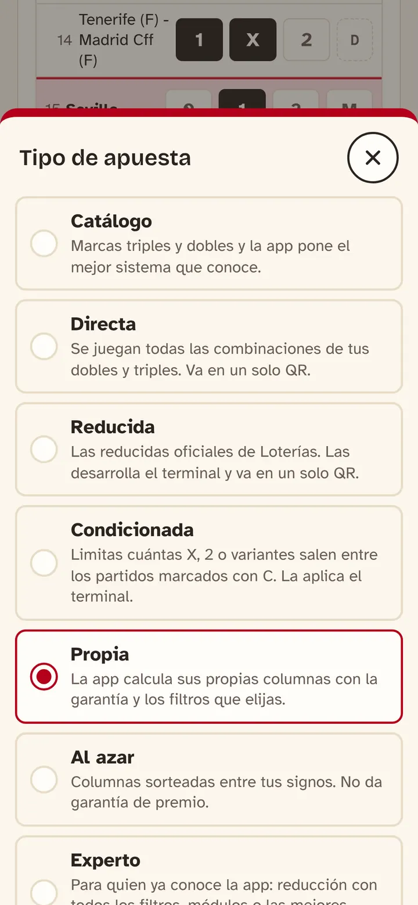

Ejemplos paso a paso
App independiente. Combinario no es oficial ni tiene relación con Loterías y Apuestas del Estado (SELAE). No vende apuestas: solo te ayuda a prepararlas, y se validan y se pagan en un punto de venta. Solo para mayores de 18 años.
Ejemplos hechos con la app, con sus números reales. Todas las garantías de esta página están comprobadas con todas las combinaciones posibles.
1. Qué es una reducida, con un ejemplo pequeño
En la Primitiva marcas 10 números. Jugarlos todos (la directa) son 210 apuestas: 210,00 €. Con una reducida «4 aciertos si salen los 6» la app da solo 3 apuestas (3,00 €):
03081115192227303438Qué asegura: si los 6 números premiados están entre tus 10, al menos una de las 3 apuestas tiene 4 aciertos o más. Hay 210 formas de que salgan 6 de tus 10 números, y la app las ha comprobado todas.
Un caso: salen 03, 11, 19, 27, 34, 38. Aciertos de cada apuesta: 3, 4, 4.
Otro caso: salen 08, 15, 22, 27, 30, 34. Aciertos: 3, 3, 4.
Lo que no asegura: que salgan tus números. Que los 6 premiados estén entre tus 10 pasa, de media, en 1 de cada 66.590 sorteos. Si salen menos de tus números, puede haber premio, pero no está asegurado. Una reducida no cambia la probabilidad de cada apuesta: solo ordena cómo juegas tus números.
2. Con 2 fijos
Marcas 12 números y tocas dos veces el 03 y el 08 para que sean fijos (van en todas las apuestas). Con «4 aciertos si salen los 6» salen 3 apuestas (3,00 €):
Qué asegura: si salen tus 2 fijos y otros 4 de tus 10 números, al menos una apuesta tiene 4 aciertos o más (210 casos, todos comprobados). Eso pasa en 1 de cada 66.590 sorteos. Si no sale algún fijo, no hay garantía. La reducida normal da siempre estas mismas apuestas para los mismos números.


3. Un «Sistema listo» de Bonoloto
En Bonoloto, «Reducida» › «Sistemas listos» › «15 números» del grupo «Aseguran 3 aciertos». La app pone la garantía; marcas 15 números y pulsas «Calcular»: 4 apuestas (2,00 €). Si salen los 6 entre tus 15 números, una apuesta tiene 3 aciertos o más (5005 casos comprobados; pasa en 1 de cada 2794 sorteos).

4. Euromillones con 10 números
Marcas 10 números y 2 estrellas, y eliges «3 aciertos si salen los 5»: 2 apuestas (5,00 €), cada una con tus 2 estrellas:
Si los 5 números premiados están entre tus 10, una apuesta tiene al menos 3 números acertados (252 casos comprobados; pasa en 1 de cada 8408 sorteos). Las estrellas no entran en la garantía.
5. Quiniela: directa, reducida oficial y reducción propia
- Directa: 1 triple y 4 dobles son 3 × 2 × 2 × 2 × 2 = 48 columnas (36,00 €). Si aciertas todos tus signos, tienes los 14.
- Reducida oficial 1.ª: 4 triples en 9 apuestas (6,75 €), en un solo QR. Elige «Reducida» en «Tipo de apuesta» y marca con R los 4 partidos; el terminal desarrolla las columnas.
- Propia al 13: con los mismos 4 triples, la app calcula 9 columnas (6,75 €) en vez de las 81 de la directa (60,75 €). Si aciertas todos tus signos, una columna tiene 13 aciertos o más (los 81 resultados posibles, comprobados).


Hay una tabla con más casos en La Quiniela.
6. Lotería Nacional: terminados en 27
Eliges el sorteo del jueves, escribes 2 y 7 en las dos últimas casillas y tocas 3 números de la lista. Con 1 décimo de cada uno son 3 décimos de 3 € = 9,00 €, en 3 QR, uno por número. Si añades un número del sábado, va aparte, con su propio QR y su precio.